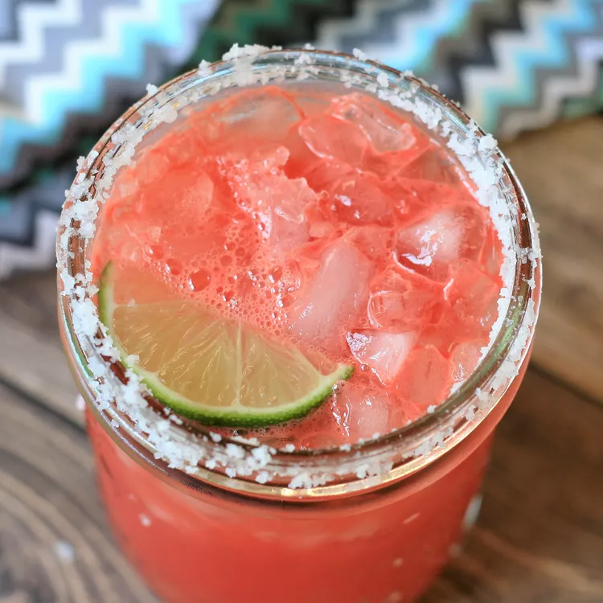

Watermelon Margarita

Description
This fresh watermelon margarita tastes amazing and is so refreshing on hot summer days. You can serve this fruity margarita on the rocks or frozen. This recipe includes a simple syrup which you can make ahead and store in the refrigerator.
Ingredients
- 1/2 cup of white sugar
- 1/2 cup of water
- 3 strips of orange zest
- 2 cups of cubed seeded watermelon
- 3/4 cup of white tequila
- 1/4 cup of lime juice
- 1 pinch of salt or sugar for rimming glasses
- 1 lime, cut into wedges
- 2 cups of crushed ice, or as needed
Steps
- To make a simple syrup: Bring 1/2 cup of sugar, water, and orange zest in a small saucepan to boil, stirring constantly. Simmer until sugar is dissolved, about 3 minutes. Remove simple syrup from heat and allow to cool completely.
- Place watermelon in a blender or food processor; blend until pureed.
- Stir watermelon puree into a large pitcher with prepared simple syrup, tequila, and lime juice.
- Place a small amount of salt or sugar into a saucer. Rub edge of margarita glasses with a lime wedge to moisten. Lightly dip the rim of the glass into the saucer to rim the glass; tap off excess salt or sugar.
- Fill rimmed glasses with crushed ice; pour margarita mixture into glasses and garnish with lime wedges to serve.
Home